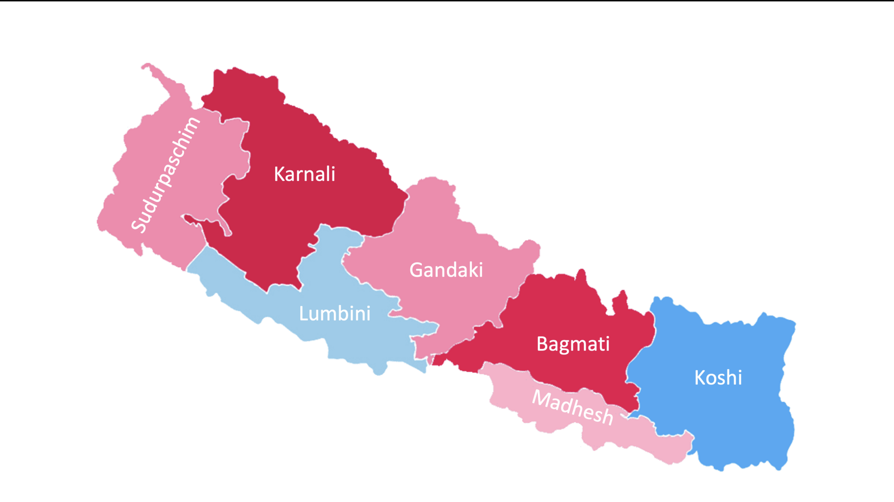

हुनेट समाधान
एउटा असफल प्रणालीलाई निको पार्न, हामीले केवल भाँचिएका टुक्राहरूलाई जोडेर हुँदैन। हामीले एउटा नयाँ मोडेल बनाउनुपर्छ। यो हाम्रो पुनरुत्पादक भविष्यको लागि खाका हो।
खण्ड १: दर्शन - सन्तुलनतर्फ पुनरागमन
हाम्रो समाधानको मूलमा एउटा सरल, गहिरो विचार छ: **HU** (मानवता), **NA** (प्रकृति), र **TE** (प्रविधि) बीचको पवित्र सन्तुलन पुनर्स्थापित गर्ने। हाम्रो विश्वास छ कि जब यी तीन तत्वहरू सद्भावमा हुन्छन्, मानव जीवन र हाम्रो वरपरको संसार फस्टाउन सक्छ। यो नयाँ विचार होइन, तर हाम्रो आधुनिक संसारले बिर्सेको एक प्राचीन सत्य हो।
खण्ड २: आत्म-खोजको बाटो - हुनेटियन बन्ने
विश्वव्यापी परिवर्तन व्यक्तिगत रूपान्तरणबाट सुरु हुन्छ। संसारलाई पुनर्निर्माण गर्नुअघि, हामीले आफैलाई पुनर्निर्माण गर्नुपर्छ। "हुनेटियन बन्ने" कोर्स आफ्नो भित्री सार्वभौमिकता पुन: प्राप्त गर्न, हानिकारक शर्तहरूबाट मुक्त हुन, र यो भविष्यलाई चाहिने किसिमको मानव बन्नको लागि एक नि:शुल्क, सार्वजनिक, स्व-निर्देशित यात्रा हो। यो कामको लागि आह्वान महसुस गर्ने जो कोहीको लागि यो पहिलो कदम हो।
खण्ड ३: पद्धति - हुनेटकल्चर
हुनेटकल्चर एक पुनरुत्पादक जीवनको लागि व्यावहारिक डिजाइन विज्ञान हो। यो एक अद्वितीय संश्लेषण हो जसले प्राचीन विज्ञानको कालातीत ज्ञानलाई सबैभन्दा प्रभावकारी आधुनिक नैतिक आविष्कारहरूसँग जोड्दछ। यसरी हामी हुनेट दर्शनलाई मूर्त वास्तविकतामा अनुवाद गर्छौं, हाम्रो खेत र घरदेखि लिएर हाम्रो परिवार र व्यवसायसम्म सबै कुरा डिजाइन गर्छौं।
- वैदिक ज्योतिष र वास्तुशास्त्र
- आयुर्वेद र योगसूत्र
- पर्माकल्चर र पुनरुत्पादक कृषि
- पर्यावरणीय वास्तुकला र प्राकृतिक निर्माण
- नवीकरणीय ऊर्जा र नैतिक प्रविधि
- पुनरुत्पादक व्यापार मोड्युल
खण्ड ४: मिशन - ७-७-७ पहल
हाम्रो पहिलो मिशन सिद्धान्तबाट जीवित प्रमाणतर्फ अघि बढ्नु हो। ७-७-७ पहल **१४ "हुनेटकल्चर हबहरू"** सह-निर्माण गर्ने हाम्रो मूर्त, स्थलगत योजना हो—नेपालका सबै **७ प्रदेशहरूमा ७ परिवार र ७ अनाथालयहरूसँग** साझेदारी गर्दै। यी हबहरू केवल परियोजनाहरू हुनेछैनन्; तिनीहरू आफ्नो सम्पूर्ण समुदायको लागि आत्मनिर्भरता, र सिकाइका प्रकाशस्तम्भहरू हुनेछन्।
